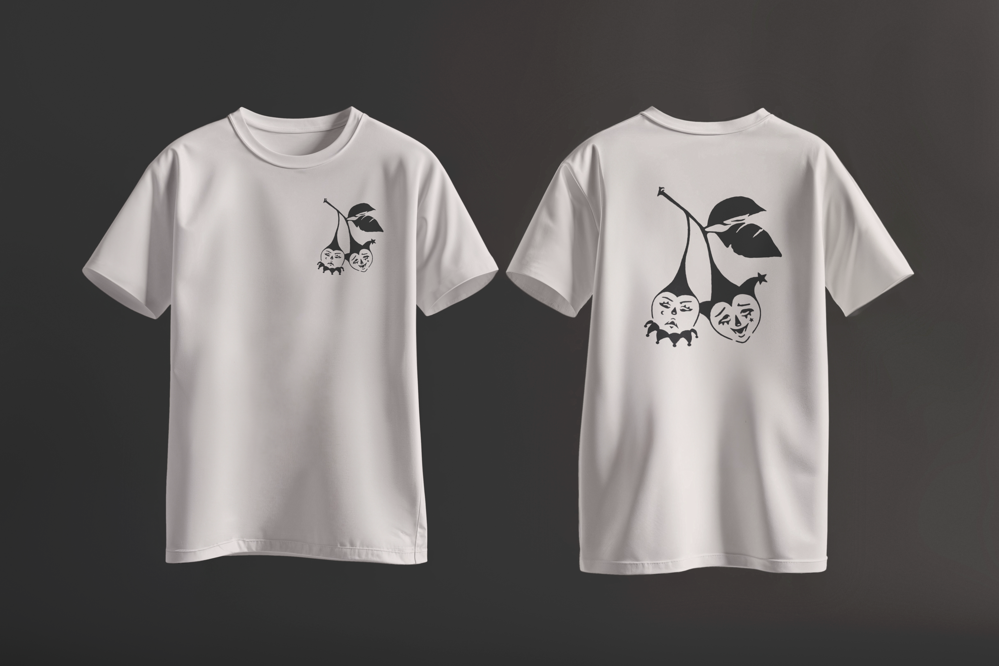
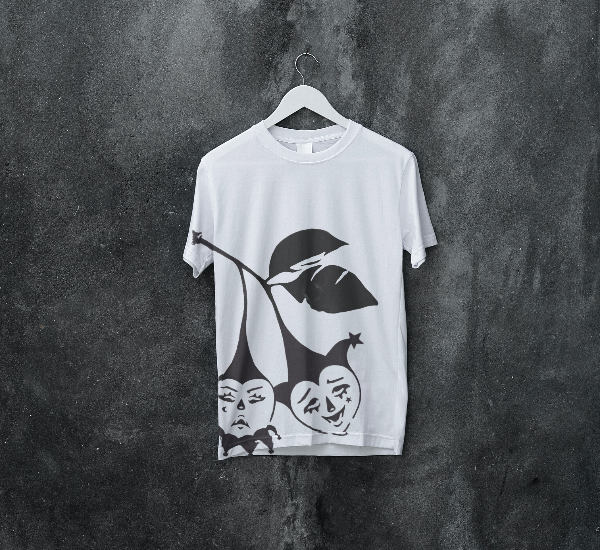

Eating cherries one day I noticed I was holding two separate fruits on a single stem — two individuals tethered together. That led me straight to duality, but I wanted to push past the obvious comedy-tragedy read.
Instead of happy and sad, I went for dismissive and indulgent. One scoffing, one leaning in. Both faces are built from nearly the same forms — the difference comes through rotation, scale, and small shifts in detail. I wanted to see how much emotional range you could pull from the same visual language. The jester accessories came in to give it that theatrical, slightly sinister edge.

Mockups

